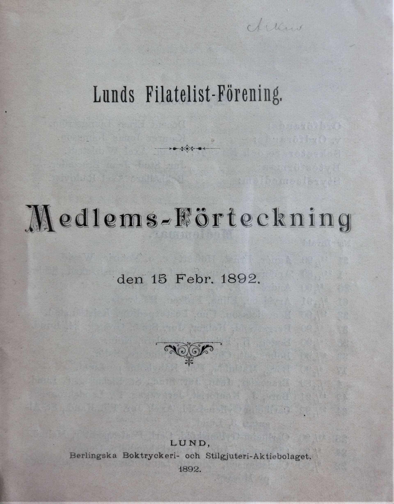
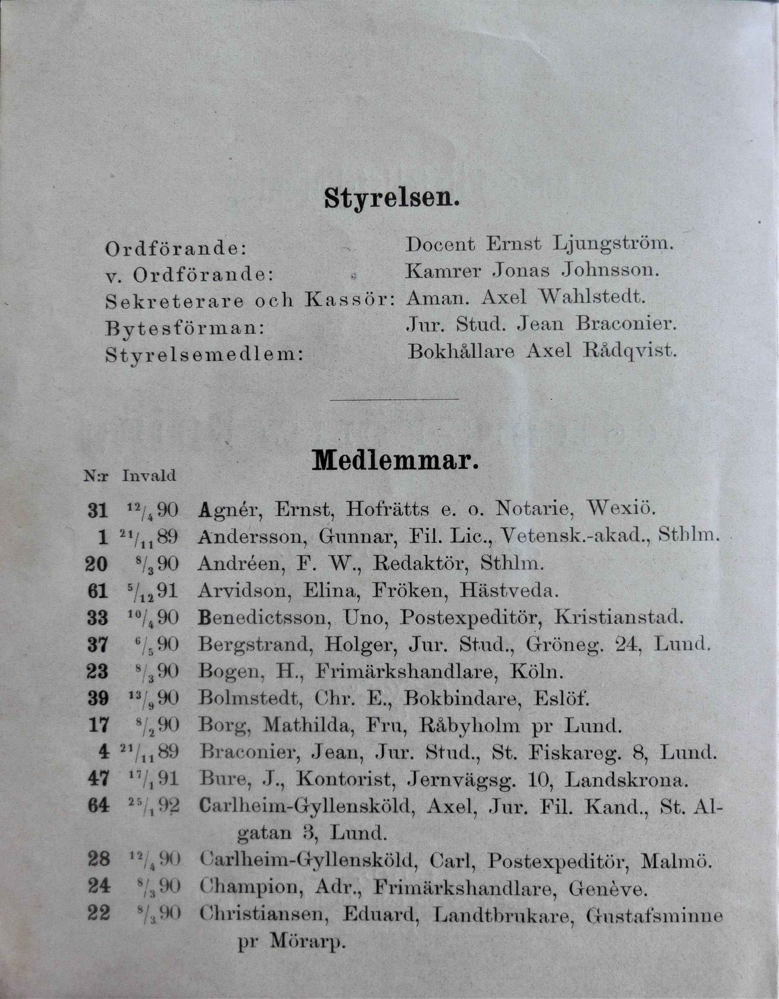
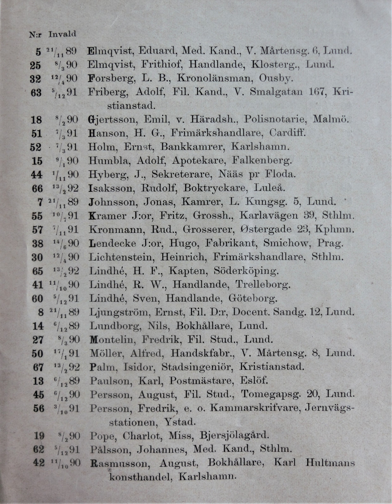
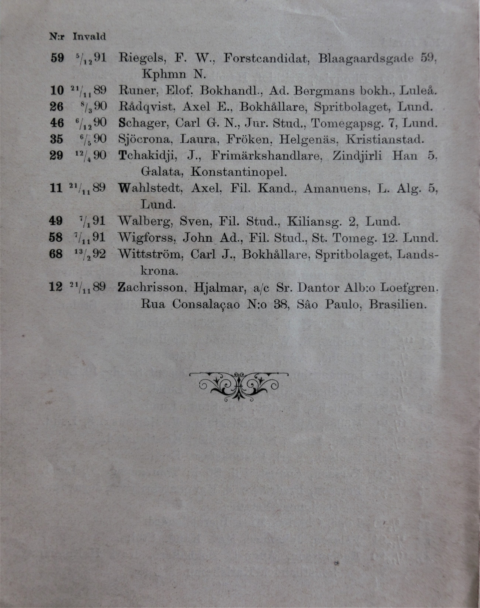
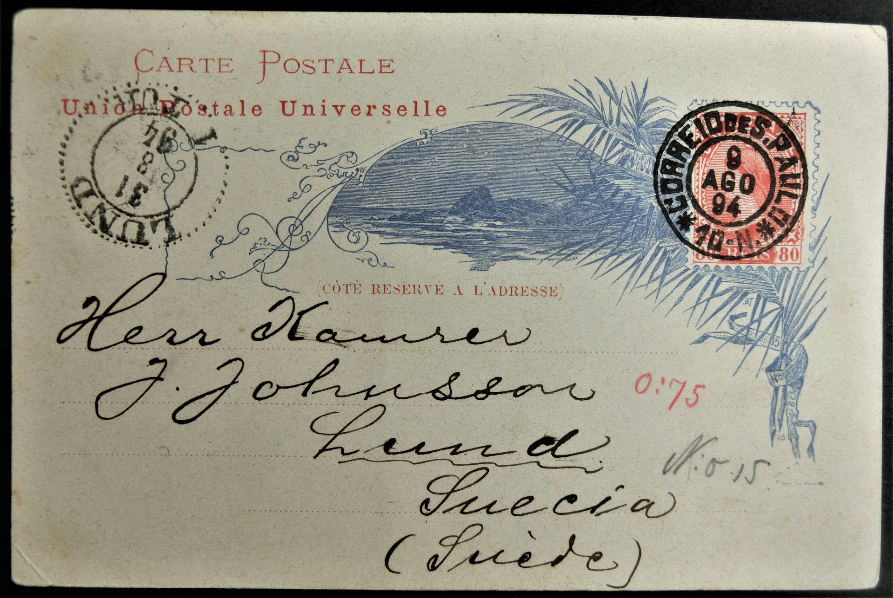
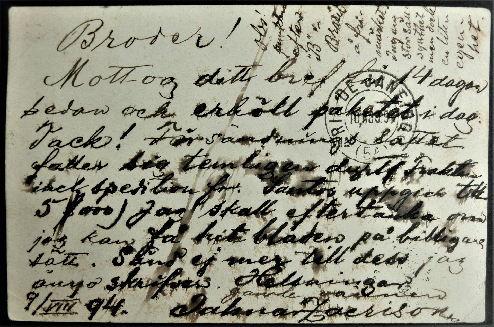

I mars 2022 fick Lunds Filatelistförenings sekreterare helt oväntat en försändelse från Stockholms Filatelistförening, vars innehåll förflyttar oss till en gången tid, faktiskt ända tillbaka till 1892. Vi i Lunds Filatelistförening är mycket tacksamma för denna gåva, som består av följande tryckta medlemsförteckningar för Lunds Filatelistförening:
Daterad
Den 15 februari 1892: 2 exemplar
Den 15 februari 1893: 1 exemplar
Den 15 februari 1894: 2 exemplar
Den 15 februari 1895: 2 exemplar
Den 15 mars 1896: 2 exemplar
Den 8 mars 1897: 3 exemplar
Den 7 mars 1898: 2 exemplar
Den 11 mars 1899: 2 exemplar
Den 15 mars 1904: 1 exemplar
När man noggrant läser medlemsförteckningen från 1892, upptäcker man, att föreningen var synnerligen internationell. Den hade då hela 7 medlemmar, som bodde på platser utanför Sveriges gränser:
Här kan ni själva studera medlemsförteckningen från 1892:




Ett meddelande till LFF:s vice ordförande från en medlem i ett fjärran land!

